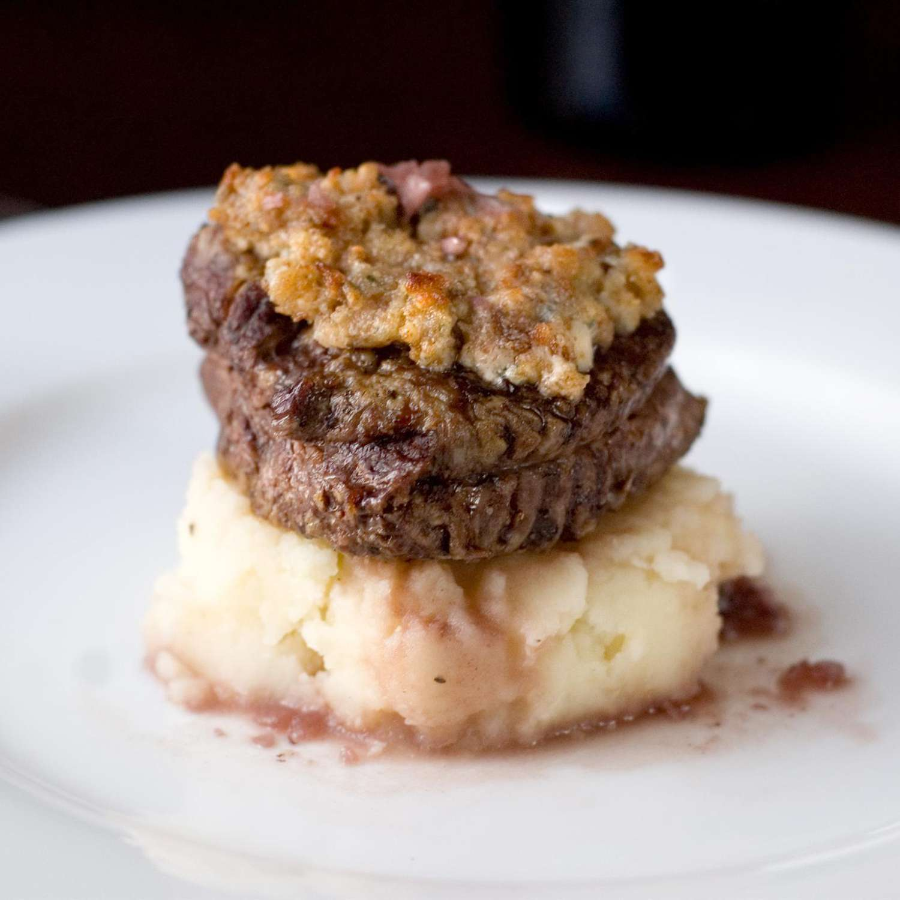

Back to index
Hash Brown Recipe
Blue Cheese Crusted Filet Mignon with Port Wine Sauce

Description:
Filet Mignon.. a beautiful name that just rolls off the tongue. A cut of meat that takes beef from rugged to delightful and classy. Tastefully
crusted with finely aged blue cheese, and lathering it in wonderfully sharp port wine sauce, will up your filet mignon game to the next level.
Wow the guests at your next dinner party with the aura of a michelin star worth dish.
Ingredients:
- 1 tablespoon butter
- 1/2 cup minced white onion
- 3 gloves garlic, minced
- 1 tablespoon chopped fresh thyme
- 3/4 cup low-sodium beef broth
- 1/2 cup port wine
- 1 tablespoon vegetable oil
- 4 filet mignon steaks (1 1/2 inch thick)
- 3/4 cup crumbled blue cheese
- 1/4 cup panko bread crumbs
Directions:
- Melt butter in a skillet over medium heat. Add the onion, garlic and thyme. Cook, stirring constantly, until onion is tender.
Stir in the beef broth, scarping any onion bits from the bottom of the pan, then stir in the port wine. Bring to a boil, and
cook until the ixture has reduced to about 1/2 cup. Set aside. This may also be made ahead of time, and reheated.
- Preheat the oven to 350 degrees F (175 degrees C). Heat oil in a cast-iron or other oven-safe skillet over high heat.
Sear steaks quickly on both sides until brown, then place the whole pan into the oven.
- Roast steaks in the oven for about 15 minutes for medium rare - with an internal temperature of 145 degrees F (63 degrees C).
You may adjust this time to allow the steaks to finish just below your desired degree of doneness if medium is not what you
prefer. Remove from the oven, and place on a baking sheet. Stir together the panko crumbs and blue cheese. Top each steak with
a layer of this mixture.
- Preheat the oven's broiler. Place steaks under the preheated broiler until the cheese topping is browned and bubbly. 3 to 4
minutes. remove from the oven, and let stand for at least 15 minutes before serving. Serve with warm port wine sauce.